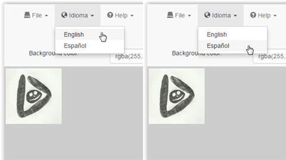
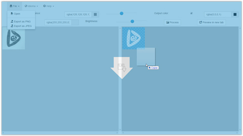
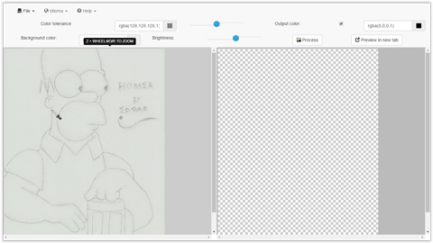
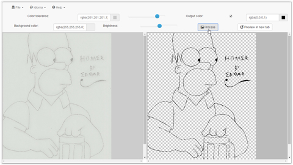
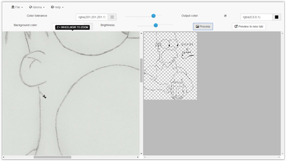
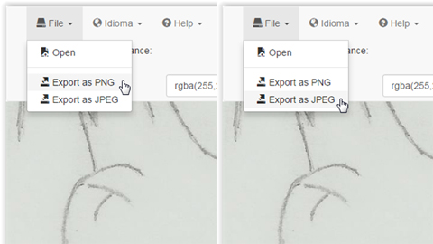
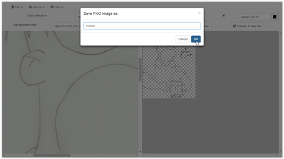
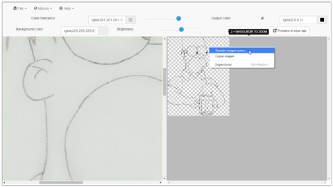

Draw2PNG is a tool you can use to extract the outline from your scanned drawing, improve it, change its color and more!
This application was originally intended to digitize sprites for videogames made by hand drawing, since drawing tablets could be quite expensive for some people (like me), usually I scanned the drawing, and then I used it as a guide layer in softwares like Adobe Photoshop© in order to create the definitive transparent drawing stroking it with the mouse, however, it was something really toilsome.
Sounds interesting, isn't it...? so, let's get started then!
First off, keep in mind that you can select a language from your preference, by now, the only languages that my application supports are English and Spanish, you can easily setup that by clicking the Idioma/Language tab and then selecting your prefered language.

Once you feel comfortable with your interface language, you can proceed to digitize your first drawing. There are two ways to import your desired drawing to the application, the first one could be done by clicking the File tab and then selecting the Open option.

A file selection dialog will be displayed and you can import your drawing from there. The second way is by dragging and dropping your drawing to the application.

You can import any of the following image types: PNG, JPEG, SVG, GIF and BMP, depending on the file size of your image, the application will take some time to read it and show it on the interface. There are two key windows in the application, the left one shows your original drawing on its original size, if you move your cursor above the original image you can see that your cursor is now an eyedropper, it means that if you click any part from the original image, it will set the color tolerance from your clicked pixel within the original canvas.
On the other hand we have the output image window at the right, this is the window where the drawing outline will be shown, usually scaled at the original image size.

On the top panel, there are several parameters you can adjust in order to obtain your desired output, they are Color Tolerance, Output Color and Background Color. The Color Tolerance is the max color that the application will considerate when scanning the input drawing, it means that all the pixels bellow or equal the adjusted color tolerance will be kept in the output and the rest will be processed as background colors.
The Output Color is the color replacement that all the matched colors (lower/equal than tolerance) in the scanning will have while the Background Color is the opposite, basically the output drawing will consist only of two colors. If the Allow output color option is not ticked, then the output color will be ignored and the result will keep the original matched color in the final image.
Once you've adjusted your desired parameters, you have to click on the Process button in order to see your output image. Keep in mind that for an optimal scanning, your drawing should be marked as dark as possible so the program can easily extract the outline with more precision, this process works very like the chroma key, but in a simpler way. You can keep repeating this process by re-adjusting your parameters until you get a satisfactory result, remember that the Color Tolerance Slider tool (right next to the color tolerance) makes things easier.

Sometimes the output outline with its original color is not so dark enough as expected, you can adjust your output image brightness by using the Brightness Slider Tool (right next to the Background color) in order to give it a better look.
If you wish so, you can click on the Preview in new window button to open the processed image in a new tab/window. Since zooming in mobile devices is not possible, this is the only way you can do it ATM for small images.
You can also control the zoom from both windows by pressing the Z key. While pressing Z you can use your mouse wheel for zoom in or zoom out, you can also use the I and O keys for zoom respectively while holding Z and if you press R, the zoom will be reset to its original size.
The zoom will be applied to a specific window depending on where your cursor is, for example, if your cursor is above the original drawing window, then the zoom is going to be applied only for that window, with the output image window happens the same thing. If your cursor is not above any window, then the zoom will be applied to both, this behavior is present while using the I, O and R keys also.

Once you feel comfortable with your output, you can proceed to export it. You can export your image in PNG or JPEG format by clicking File and selecting your desired image type to export.

An input dialog will prompt a request for the name of the file to export in either case, just provide the name that you want and the browser will download the file.

Be aware that some browsers don't support downloading files (like Opera), since they don't implement the Blob and window.URL JavaScript APIs required for the application, hence nothing happens once you press ENTER or click OK in the input dialog. You can fix this problem depending on which browser you're using, for example, some browsers allow you to download images through the context menu by right clicking the desired image (like chrome), but again, this really depends on the browser capability and is only a partial solution.

The only version of Safari I've tested is the elder 5.1.7 from 2012 on Windows, and importing files is not possible since it doesn't supports the FileReader JavaScript class. With Internet Explorer... well... guess... it looks awful since it has problems rendering the canvas within a scroll frame and it doesn't get the image data correctly. So the most optimal browsers I suggest you to use are Google Chrome, Mozilla Firefox, Android and Opera Browser (if you dare to seek how to export the image).
Despite that, is not perfect, like everything, but if you're in Chrome (and I hope you do!) you will get the best experience, trust me, this app is intended for digitizing simple drawings, and you can remove imperfections using softwares like Adobe Photoshop© and using the eraser tool (that's what I do). Then, you can paint it and do whatever you want with it, if you have any question, don't hesitate to contact with me :)